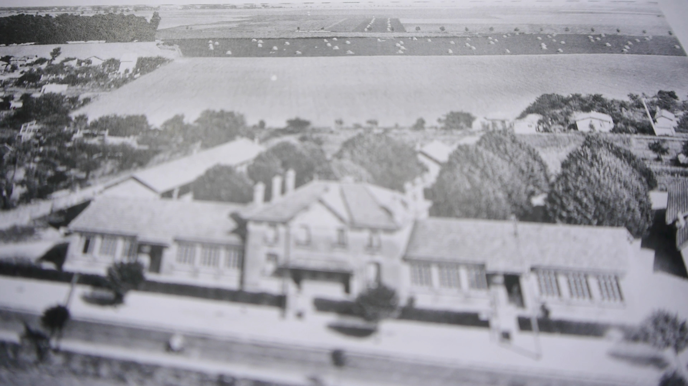
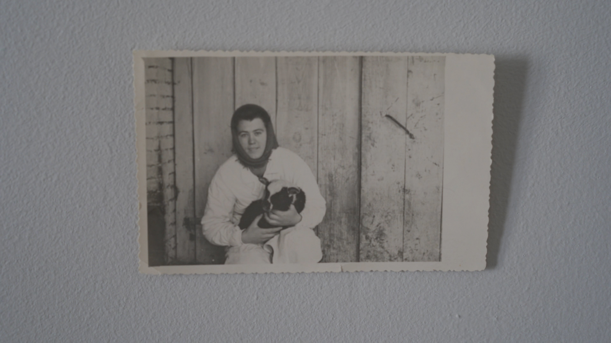
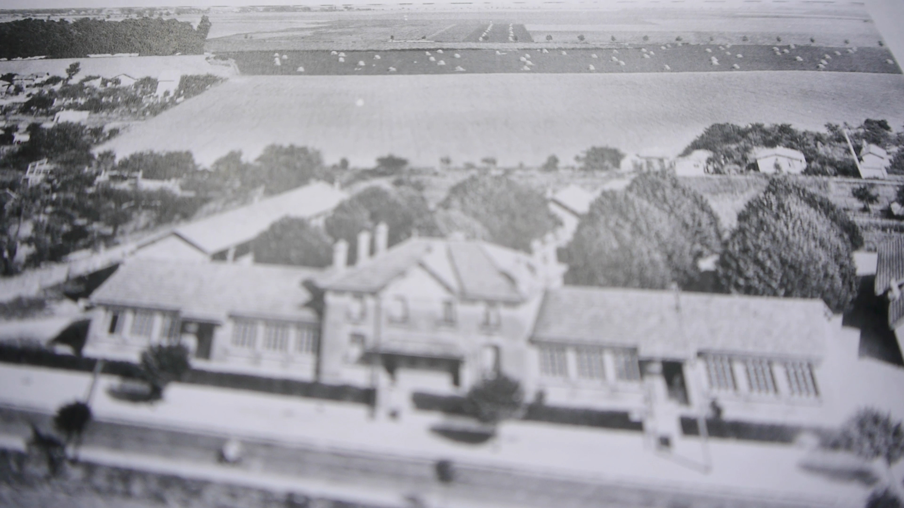
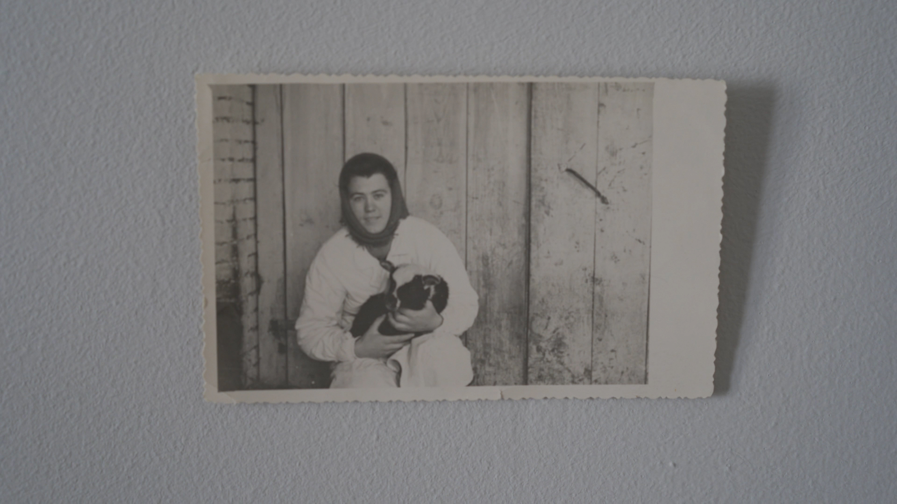

De la terre à la Terre
Vidéo d'essai, 2022, Durée : 11min
Habitant dans une zone anciennement agricole, je suis partie à la recherche d’un récit sensible capable d’évoquer la question de la consommation alimentaire. Le film est composé à partir de photographies d’archives familiales et de celles de la ville de Villepinte, ainsi que d’extraits vidéo réalisés avec des groupes de jeunes autour du thème de l’alimentation, pendant une résidence à la Ferme Godier (Villepinte) en 2021.
___
Journal du bord :
Cette vidéo est née d’un questionnement sur l’alimentation des villes en France. Après le Covid et la naissance de mon enfant, les questions liées à l’alimentation sont devenues mes principales préoccupations.
C’est aussi à ce moment-là qu’a eu lieu ma rencontre avec Rungis et avec "Genèse d'un repas" de Luc Moullet, 1977.
 


